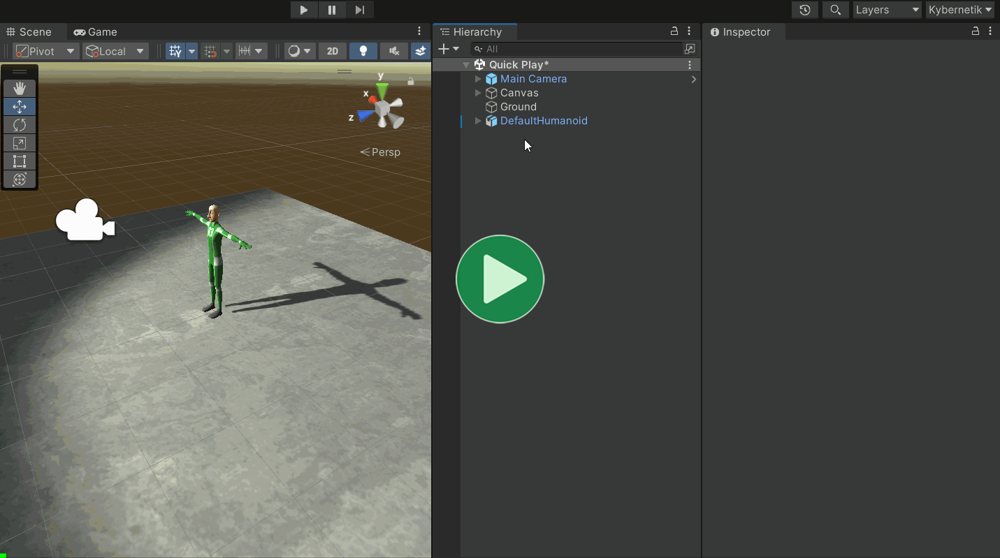
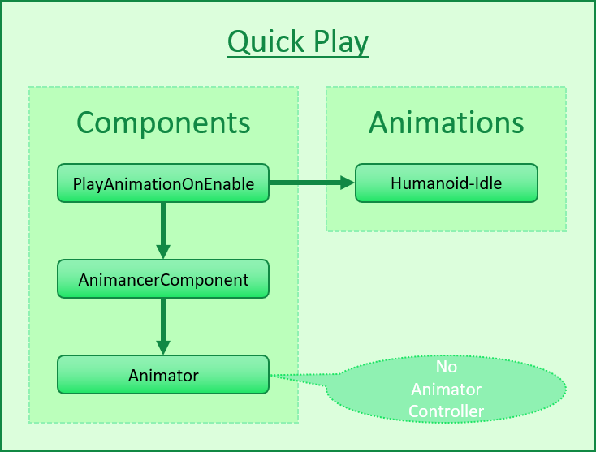
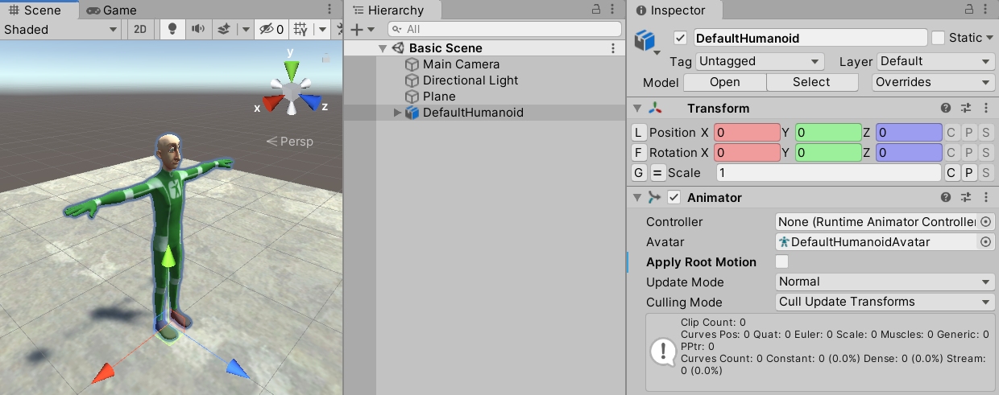
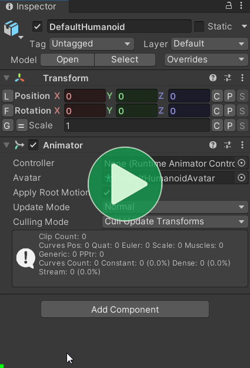
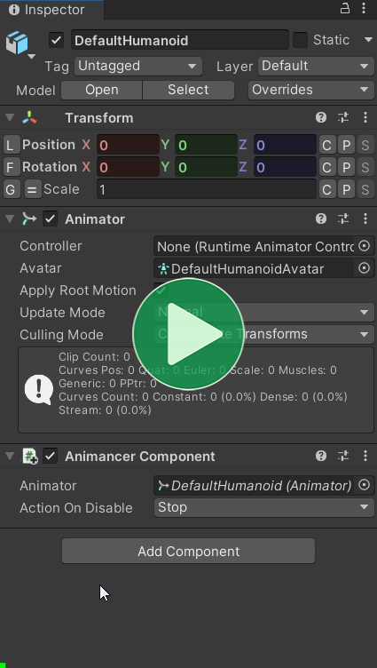
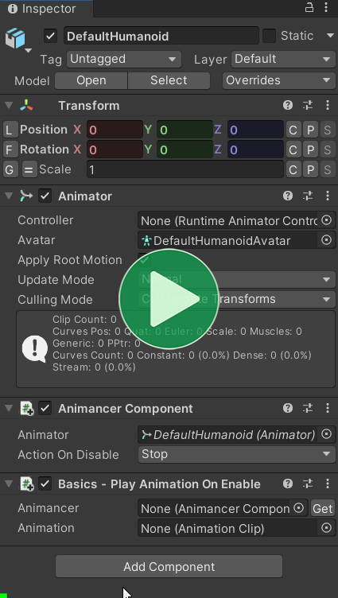
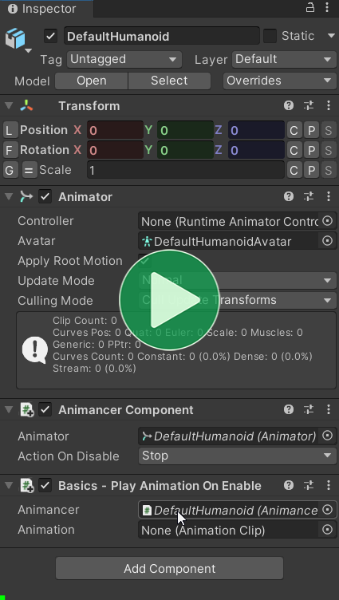

Location: Assets/Plugins/Animancer/Examples/01 Basics/01 Quick Play
Recommended After: learning how to use Unity (animation experience not required).
Learning Outcomes: in this example you will learn:
How to play an animation using Animancer.
How to write a simple script.
How to set up component and asset references using the Inspector.
This example demonstrates how to write a very simple script which tells Animancer to play an animation.

Note that if all you want to do is play one animation on its own without any of the other features of Animancer then the Solo Animation component can do so without even needing a custom script.
Summary
Animancer's examples each start with a Summary section which quickly lists the main topics covered. This aims to give some overall context to the individual steps and allow you to skip over things you aren't interested in.
This example involves the following steps:
- Write this script:
using Animancer;
using UnityEngine;
public sealed class PlayAnimationOnEnable : MonoBehaviour
{
[SerializeField] private AnimancerComponent _Animancer;
[SerializeField] private AnimationClip _Animation;
private void OnEnable()
{
_Animancer.Play(_Animation);
}
}
- Attach it to your model and assign its references in the Inspector.

- Enter Play Mode and watch the animation play.
So where do you want to go from here?
Overview
Here's what the general code structure of the scene looks like:

The following sections explain how to write each part of the PlayAnimationOnEnable script from scratch and how to set it up in Unity, but if you have trouble understanding the concepts introduced here then you might want to start with some tutorials on the Unity Learn website to learn the basics of programming and using Unity before learning to use Animancer.
New Script
Start by following the New Script instructions to create a script called PlayAnimationOnEnable and open it up in your IDE (such as Visual Studio). Edit the script so that it looks like this:
using UnityEngine;
public sealed class PlayAnimationOnEnable : MonoBehaviour
{
}
The New Script section also explains what each of the parts of the script mean, but you can come back to it later if you just want to see the animation playing.
Fields
In order to play an animation, the script will need two things:
- A reference to the
AnimancerComponentof the object that will play the animation. - A reference to the
AnimationClipasset for it to play.
So we declare a Serialized Field for each of them inside the class like so:
using Animancer;
using UnityEngine;
public sealed class PlayAnimationOnEnable : MonoBehaviour
{
[SerializeField] private AnimancerComponent _Animancer;
[SerializeField] private AnimationClip _Animation;
}
Animancer's examples use Serialized Fields because they make it easy to see what a script is interacting with, but there are various other ways of getting references to things which are explained in the Component Referencing and Asset Referencing sections.
Scene Setup
Now we can save the above script and go back to the Unity Editor to set it up on a character in the scene.
- If you don't have a scene with a character in it yet, you can follow the Basic Scene Setup instructions to create one.
2. Select your character (the root object with the Animator component).
The Controller field should be showing None (Runtime Animator Controller) by default. Otherwise you can clear it by clicking on it and pressing the Delete key.

3. Add an AnimancerComponent if you didn't do so already as part of the Basic Scene Setup.

4. Add the PlayAnimationOnEnable script you just created.
If you're unable to add the script:
- Make sure you have saved the script.
- Make sure the script file name exactly matches the name of the class in the script (
PlayAnimationOnEnable). - Make sure the Console window isn't showing any errors.

5. Drag and drop the AnimancerComponent into the Animancer field.

6. Use the icon next to the Animation field to open the Object Picker and find the animation you want to use.

Click here if you are wondering why the Transform component looks different from Unity's default in those videos.
It's because of a plugin called Inspector Gadgets (also made by Kybernetik like Animancer). Its main feature replaces the default Transform Inspector to add various enhancements, many of which are included in Inspector Gadgets Lite for free.
Inspector Gadgets Pro also adds many more features like the [Get] button on the right of the Animancer field which would search for an appropriate object with a single click instead of needing you to drag and drop into the field.
Playing the Animation
Now the only thing left to do is edit the script to actually tell Animancer to play the animation. We could have done that right after writing the Fields, but doing it in this order will hopefully be a bit easier for beginners to understand (write the fields in code -> assign objects to them in the Unity Editor -> write the code to play the animation -> see it playing).
For this example, we want to play the animation immediately when the scene starts so we write a Method called OnEnable inside the class.
private void OnEnable()
{
}
OnEnable is one of the MonoBehaviour Messages so giving it that name will make Unity automatically call it for us on startup.
All that method needs to do is tell the AnimancerComponent (the reference stored in the _Animancer field) to play the AnimationClip (the reference stored in the _Animation field).
private void OnEnable()
{
_Animancer.Play(_Animation);
}
Conclusion
Here's what the full script looks like:
using Animancer;
using UnityEngine;
public class PlayAnimationOnEnable : MonoBehaviour
{
[SerializeField] private AnimancerComponent _Animancer;
[SerializeField] private AnimationClip _Animation;
private void OnEnable()
{
_Animancer.Play(_Animation);
}
}
After you save the script and press Play in the Unity Editor, the character will play the animation you gave it.
What Next?
You might want to go on with any of the examples in the table below, but there are a few other documentation pages about important topics which aren't covered in the examples:
- Getting Animations - These examples don't demonstrate how to get, create, or import animations because those tasks aren't part of Animancer (it's a system for playing animations, not making them).
- Inspector - None of the examples go into detail about how the
AnimancerComponent's Inspector works.
| Example | Topic |
|---|---|
| Basic Movement | Playing a Walk animation while the user holds a button and returning to Idle when it is released. |
| Basic Action | Playing an Action animation when the user clicks and returning to Idle when it finishes. |
| Solo Animation | As mentioned at the start, this is just an example of the most basic thing Animancer can do, but if you actually have a situation where all you want to do is play one animation on its own without any of the other features of Animancer then the Solo Animation component can do so more efficiently (and without even needing a custom script). |